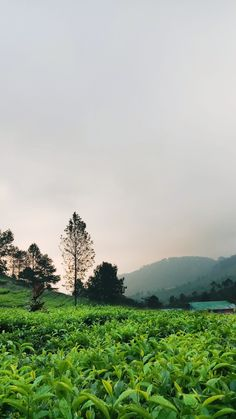

Pantai
Pantai adalah area bertepi laut yang terdiri dari pasir atau batu-batu kecil yang membentang dari daratan ke laut. Pantai juga dapat berupa daerah pasang surut yang berbatasan dengan lautan, sungai atau danau
Gunung
Gunung adalah formasi geografis yang terbentuk akibat proses geologi dan tektonik di bumi. Gunung terdiri dari puncak atau puncak-puncak yang terbentuk dari endapan material vulkanik atau bebatuan.

Air terjun
Air terjun adalah formasi air yang mengalir dari ketinggian dan jatuh ke bawah dengan kekuatan yang bervariasi , seringkali menghasilkan suara gemuruh dan cipratan air yang menyegarkan Wisatawan.
Kawah putih

Kawah Putih adalah sebuah objek wisata alam berupa danau vulkanik dengan air berwarna putih kehijauan yang terletak di kawasan Gunung Patuha, Jawa Barat, Indonesia. Nama "Kawah Putih" berasal dari warna putih dari tanah vulkanik di sekitarnya. Kawah Putih merupakan salah satu tempat wisata yang populer di Jawa Barat dan menarik banyak pengunjung setiap tahunnya.
Puncak
Puncak adalah sebuah tempat yang berada pada ketinggian tertinggi di suatu wilayah atau gunung. Secara umum, puncak sering dikaitkan dengan keindahan pemandangan alam yang luar biasa, sehingga sering menjadi tujuan wisatawan yang ingin menikmati keindahan panorama dari ketinggian. Di Indonesia, terdapat banyak gunung yang memiliki puncak yang terkenal, seperti Gunung Rinjani, Gunung Semeru, dan Gunung Merbabu. Namun, puncak juga dapat merujuk pada titik tertinggi pada bangunan atau objek lainnya, seperti puncak menara atau puncak bukit.
